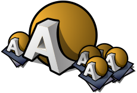

|  |
ArtPaint's User Documentation ArtPaint is a painting and image-processing tool originally developed by Heikki Sukkonen for the BeOS — now maintained and extended by the HaikuArchives team for Haiku. Most of ArtPaint's features are easily discovered and don't need explaining. When in doubt, this user documentation can serve as a reference. Here's the contents to quickly jump to the topic of interest: |
|
The index |
||||
| The tools | The add-ons | |||
Next: The main window